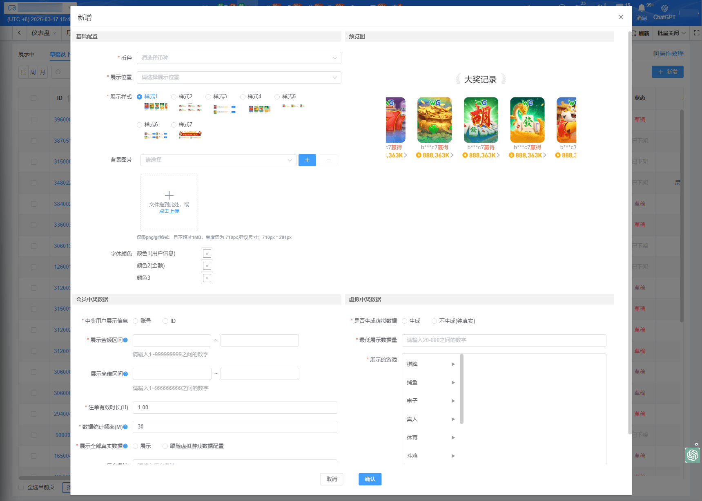
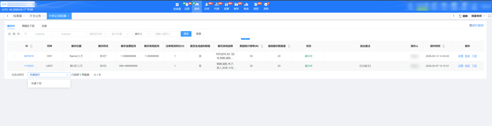
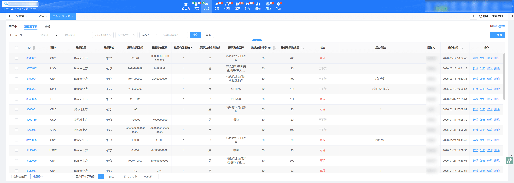
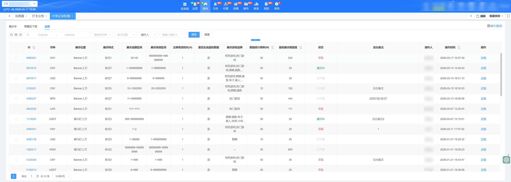

中奖记录轮播
一、新增
1、币种：必填，选择的币种决定了客户端的展示和对应游戏数据
2、展示位置：必填，可选择Banner上方、跑马灯上方、中部菜单上方、页脚上方，如果同时配置虚拟彩金池，则展示在虚拟彩金池下方
3、展示样式：提供七种样式，选中后可在右边预览图查看效果。中奖记录轮播的游戏卡片图标展示，与个性化配置-版式个性化的游戏卡片图标所选图标保持一致
样式7联动展示说明：中奖轮播将不再单独配置展示位置和背景图，实际展示位置完全跟随所选虚拟彩金池的展示位置，展示依赖于虚拟彩金池的有效状态，若彩金池不可用，中奖轮播将不会单独展示
4、背景图片：可按照语言选择，选择后必须上传背景图，无配置默认不展示；选择样式7时，不支持上传背景图
5、字体颜色：非必填，修改后客户端展示对应的颜色
颜色1（用户信息）：指账号或者ID的字体颜色
颜色2（金额）：指金额或者倍数的字体颜色
颜色3：指恭喜/中奖/赢得这类字体的颜色
6、中奖用户展示信息：必填，单选，选项为"账号"、"ID"，无默认值，客户端的中奖用户信息根据此配置项展示
7、展示大额区间：数字输入框，支持填写最小值和最大值；输入范围1~999999999
8、展示高倍区间：支持填写最小值和最大值，输入范围1~999999999
9、注单有效时长(H)：按第一次配置完成后的时间开始计算，仅统计投注结算时间在该有效时长内的数据，不包含第一次配置时间之前的数据
配置范围：支持输入0.1~12之间的数值，默认数据：1
说明：第一次配置是指新建中奖记录轮播，或同一中奖记录轮播下架后超过12小时再次上架
举例：当天8：00新建了中奖记录轮播，设置注单有效时长为1小时，数据统计频率为30分钟，则第一次展示：投注结算时间为8：00~8：30符合的数据，第二次更新展示：投注结算时间为8：00~9：00符合的数据，以此类推，超出注单有效时长的数据将不再展示
10、数据统计频率(M)：根据频率定时筛选符合条件的注单
11、展示全部真实数据：必填、单选，无默认选项
选项-展示：客户端完全按照真实注单数据展示哪些游戏中奖
选项-跟随虚拟数据游戏配置：客户端真实数据也会按照虚拟数据配置的游戏过滤真实数据进行展示
12、是否生成虚拟数据：必填，单选；选择生成，则游戏数据为真实数据和虚拟数据相结合；选择不生成，则游戏数据都为真实数据
13、最低展示数据量：输入范围 20~600；若没有勾选生成虚拟数据，仅展示现有的真实数据，可能会低于设定的最低展示数量
14、展示的游戏：按对应币种开启的游戏进行选择；若没有勾选生成虚拟数据，仅展示真实数据的游戏类型，不会根据选择的游戏类型进行展示
支持一键选择热门游戏、特色游戏，直接取热门游戏、特色游戏开启的子游戏；热门游戏和特色游戏需配置数据才展示此选项；若为空则不会展示此选项
15、客户端生效机制：上架后，将会在10分钟左右进行首次数据统计，后续数据更新频率将根据设定的统计频率进行；需注意若首次统计的数据为空（无中奖数据），客户端不会展示中奖记录轮播，直到有数据可展示为止才会生效；若希望快速验证展示效果，建议勾选生成虚拟数据，以确保有数据可展示
16、后台备注：按需填写，仅后台查看

二、展示中
1、当前仅支持每个币种配置一条展示中状态的数据
2、操作可选择：详情、下架，支持批量下架

三、草稿及下架
1、新增后的数据和下架的数据都展示在这里
2、操作可选择：详情、发布、修改、删除，支持批量发布

四、全部
1、展示所有中奖轮播的配置数据，包含展示中、草稿、已下架的数据
2、操作只有：详情
